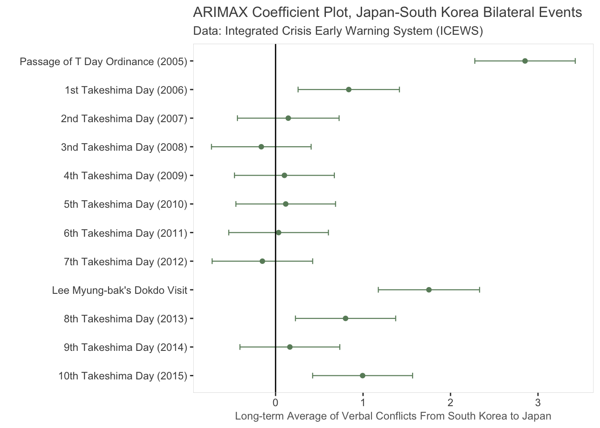
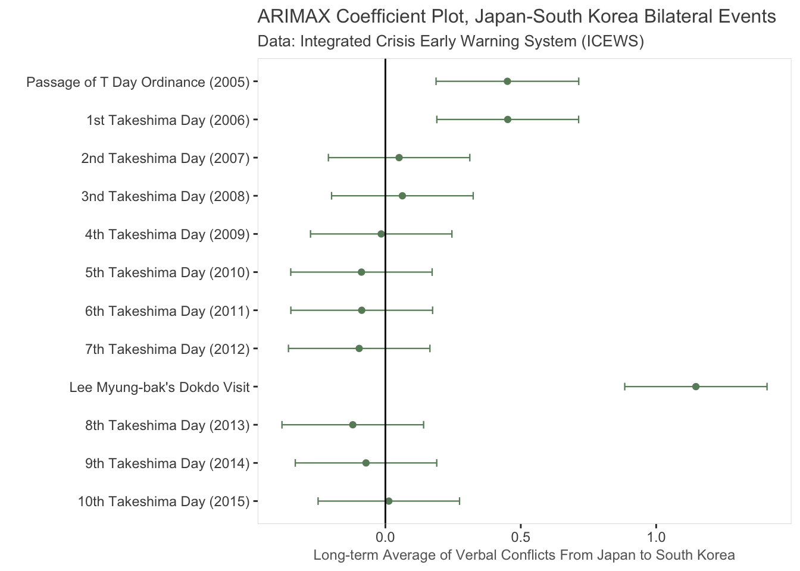

5 ARIMAX
5.1 Bilateral Events as “Schocks”
5.2 ARIMAX
## Warning: package 'stargazer' was built under R version 4.0.2##
## Please cite as:## Hlavac, Marek (2018). stargazer: Well-Formatted Regression and Summary Statistics Tables.## R package version 5.2.2. https://CRAN.R-project.org/package=stargazer##
## Call:
## arima(x = ritualized_day$`Verbal Conflict`, order = c(2, 0, 1), xreg = takeshima_day)
##
## Coefficients:
## ar1 ar2 ma1 intercept Passage of T Day Ordinance (2005)
## 1.1927 -0.2457 -0.8616 0.6390 3.3068
## s.e. 0.0275 0.0186 0.0227 0.0839 0.5548
## 1st Takeshima Day (2006) 2nd Takeshima Day (2007)
## 1.9604 0.1922
## s.e. 0.5379 0.5356
## 3nd Takeshima Day (2008) 4th Takeshima Day (2009)
## -0.0778 -0.1177
## s.e. 0.5367 0.5355
## 5th Takeshima Day (2010) 6th Takeshima Day (2011)
## -0.2681 -0.2915
## s.e. 0.5352 0.5352
## 7th Takeshima Day (2012) Lee Myung-bak's Dokdo Visit
## -0.3632 2.6489
## s.e. 0.5357 0.5371
## 8th Takeshima Day (2013) 9th Takeshima Day (2014)
## 0.5663 0.1606
## s.e. 0.5351 0.5351
## 10th Takeshima Day (2015)
## 1.1040
## s.e. 0.5355
##
## sigma^2 estimated as 4.705: log likelihood = -11810.58, aic = 23655.16
##
## Training set error measures:
## ME RMSE MAE MPE MAPE MASE ACF1
## Training set -0.0006253229 2.169023 0.9708351 NaN Inf 0.9975145 0.003859722
## Saving 7 x 5 in image## Series: ritualized_day$`Material Conflict`
## ARIMA(1,0,2) with non-zero mean
##
## Coefficients:
## ar1 ma1 ma2 mean
## 0.8466 -0.6294 -0.0658 0.1748
## s.e. 0.0269 0.0305 0.0179 0.0226
##
## sigma^2 estimated as 0.6957: log likelihood=-6662.25
## AIC=13334.5 AICc=13334.51 BIC=13367.46
## Saving 7 x 5 in image5.3 Directional ARIMAX
5.3.1 Korea to Japan
## Series: K2J$`Verbal Conflict`
## ARIMA(1,1,1)
##
## Coefficients:
## ar1 ma1
## 0.3170 -0.9625
## s.e. 0.0151 0.0061
##
## sigma^2 estimated as 3.333: log likelihood=-11066.08
## AIC=22138.16 AICc=22138.17 BIC=22157.99## Series: diff_vc
## ARIMA(1,0,1) with zero mean
##
## Coefficients:
## ar1 ma1
## 0.3170 -0.9625
## s.e. 0.0151 0.0061
##
## sigma^2 estimated as 3.333: log likelihood=-11066.08
## AIC=22138.16 AICc=22138.17 BIC=22157.99
5.3.2 Japan to Korea
## Series: J2K$`Verbal Conflict`
## ARIMA(5,0,2) with non-zero mean
##
## Coefficients:
## ar1 ar2 ar3 ar4 ar5 ma1 ma2 mean
## 1.3279 -0.4363 -0.0519 0.0513 0.0481 -1.1429 0.3039 0.1686
## s.e. 0.1098 0.1143 0.0250 0.0258 0.0192 0.1094 0.0919 0.0275
##
## sigma^2 estimated as 0.5932: log likelihood=-6337.73
## AIC=12693.46 AICc=12693.49 BIC=12752.93